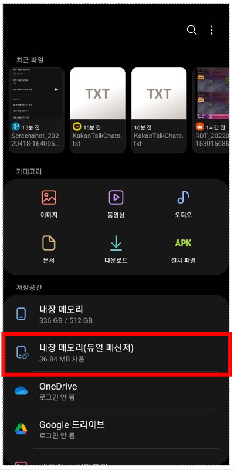
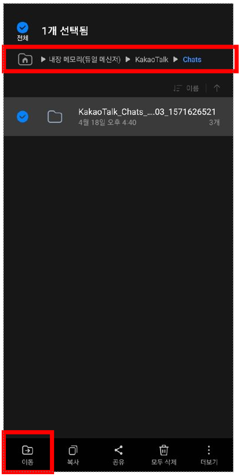
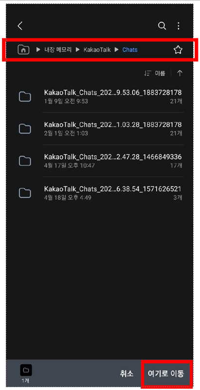

/parser/
듀얼 메신저 분석 방법
일시적 방안입니다.
1. 파일 앱 실행

원래 없었던 "내장 메모리(듀얼 메신저)" 폴더가 생성된것을 확인하실 수 있습니다.
2. 듀얼 메신저 폴더 안에 듀얼 메세지 채팅 폴더 찾기
(현재 듀얼 메신저에서 대화내용 내보내기를 하면 여기에 저장되는것으로 확인됐습니다)

3. 선택한 폴더를 내장 메모리 (일반)으로 이동

내장 메모리(듀얼 메신저)/KakaoTalk/Chats → 내장 메모리/KakaoTalk/Chats
위와 같이 폴더를 이동하면 분석기 앱에 정상적으로 표시됩니다.
질문이 있으시다면 편하게 문의 주세요.
이메일: rexyrex.dev@gmail.com